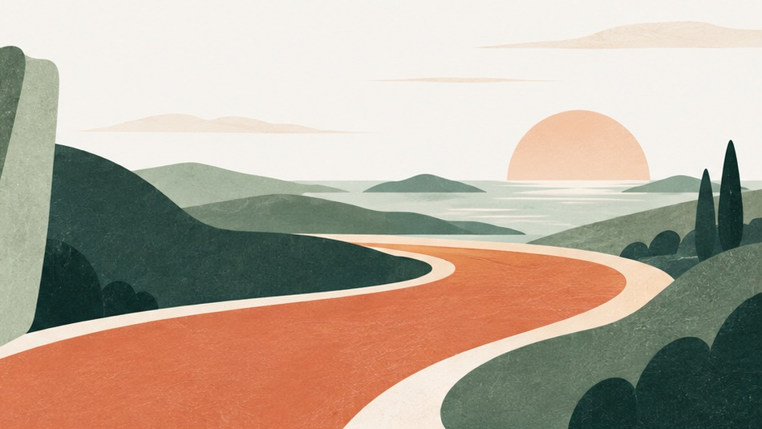

See the opportunity
We map the work with your team and identify the delays, repeated tasks, and missed handoffs. We use your own records to understand the cost and choose what is worth changing.
Work that flows. Answers when you need them. Your key numbers at your fingertips. Zacky helps you clear the bottlenecks, redesign how the work moves, and build the systems that give you room to lead.
Book a conversation
Recognize the feeling?
Most leaders spend their best hours keeping things moving: chasing updates, pulling numbers, answering the questions only they can answer. Clear the bottlenecks and that time comes back as room to think, decide, and grow.
Approvals, decisions, and handoffs stack up behind one or two people. When they’re out, the work stops.
Work that flows.We map where the work gets stuck, redesign the path, and let routine steps move on their own, with a person responsible for the exceptions.
Updates live in inboxes, spreadsheets, and someone’s memory. Getting a straight answer becomes a job of its own.
The information you need, when you need it.Bring what people need into one place they can trust, with a path back to the source.
The numbers that tell you you’re on track take days to pull, so they get looked at too late.
Key indicators at your fingertips.One view that updates itself, points out what changed and why it matters, and tells you when something needs your attention.
There’s no time left to step back, test a new idea, or plan for what’s next.
Room to lead.With the routine running and the numbers in view, your time goes to strategy: where to grow, what would break at twice the size, and where AI can open something new.
You bring the knowledge of your organization. We bring an independent view of what’s possible, then work alongside you to put it into practice.
We map the work with your team and identify the delays, repeated tasks, and missed handoffs. We use your own records to understand the cost and choose what is worth changing.
We simplify the process before adding technology. Tools are chosen around your goals, existing systems, and budget, including capabilities you already have.
We build and test the system with the people who will use it. You get clear ownership and documentation, human review where it matters, and ongoing checks on whether the change is helping.
At a sign manufacturer, field reports are written onto the corresponding job and install dates are checked against crew calendars. Here is what the source records count.
field reports written onto the right job in two months, without anyone copying them over.
of 2,056 automated runs in a 30-day stretch finished clean, and every failure was caught and flagged.
You work directly with us, from figuring out what’s worth changing to making sure it works for the people using it.
I’m Kara Dedert, founder of Zacky. My background is in operations, and I like removing the bottlenecks that keep good people and ideas from moving forward. I help leaders see a different way to work, then use AI and automation to put it into practice.
Evelyn builds and connects the systems: the automations, the integrations, and the screens your team uses. She keeps each one working as your organization changes.
Bring one process that takes too much time, one recurring handoff that breaks down, or one idea you haven’t had room to pursue. We’ll talk about how it works today, what you want to change, and whether Zacky is the right partner to help.